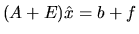
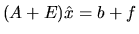

We illustrate standard error analysis with the simple example of
evaluating the scalar function y=f(z). Let the output of the
subroutine which implements f(z) be denoted ;
this includes
the effects of roundoff. If
where  is small,
then we say
is a backward stable
algorithm for f,
or that the backward error
is small,
then we say
is a backward stable
algorithm for f,
or that the backward error  is small.
In other words,
is the
exact value of f at a slightly perturbed input .4.5
is small.
In other words,
is the
exact value of f at a slightly perturbed input .4.5
Suppose now that f is a smooth function, so that
we may approximate it near z by a straight line:
.
Then we have the simple error estimate
If f and z are vector quantities, then f'(z) is a matrix
(the Jacobian). So instead of using absolute values as before,
we now measure  by a vector norm
and f'(z)
by a matrix norm |f'(z)|. The conventional (and coarsest) error analysis
uses a norm such as the infinity norm. We therefore call
this normwise backward stability.
For example, a normwise stable
method for solving a system of linear equations Ax=b will
produce a solution
satisfying

where
and
are both small (close to machine epsilon).
In this case the condition number is
(see section 4.4 below).
by a vector norm
and f'(z)
by a matrix norm |f'(z)|. The conventional (and coarsest) error analysis
uses a norm such as the infinity norm. We therefore call
this normwise backward stability.
For example, a normwise stable
method for solving a system of linear equations Ax=b will
produce a solution
satisfying

where
and
are both small (close to machine epsilon).
In this case the condition number is
(see section 4.4 below).
Almost all of the algorithms in LAPACK (as well as LINPACK and EISPACK)
are stable in the sense just described4.8:
when applied to a matrix A
they produce the exact result for a slightly different matrix A+E,
where
is of order  .
In a certain sense, a user can hardly ask for more, provided the
data is at all uncertain.
.
In a certain sense, a user can hardly ask for more, provided the
data is at all uncertain.
It is often possible to compute the norm |E| of the actual backward error by computing a residual r, such as r=Ax-b or , and suitably scaling its norm |r|. The expert driver routines for solving Ax=b do this, for example. For details see [55,67,85,95].
Condition numbers may be expensive to compute
exactly.
For example, it costs about
operations to solve Ax=b
for a general matrix A, and computing
 exactly costs
an additional
operations, or twice as much.
But
exactly costs
an additional
operations, or twice as much.
But
 can be estimated in only O(n2)
operations beyond those
necessary for solution,
a tiny extra cost. Therefore, most of LAPACK's condition numbers
and error bounds are based on estimated condition
numbers, using the method
of [59,62,63].
The price one pays for using an estimated rather than an
exact condition number is occasional
(but very rare) underestimates of the true error; years of experience
attest to the reliability of our estimators, although examples
where they badly underestimate the error can be constructed [65].
Note that once a condition estimate is large enough,
(usually
), it confirms that the computed
answer may be completely inaccurate, and so the exact magnitude
of the condition estimate conveys little information.
can be estimated in only O(n2)
operations beyond those
necessary for solution,
a tiny extra cost. Therefore, most of LAPACK's condition numbers
and error bounds are based on estimated condition
numbers, using the method
of [59,62,63].
The price one pays for using an estimated rather than an
exact condition number is occasional
(but very rare) underestimates of the true error; years of experience
attest to the reliability of our estimators, although examples
where they badly underestimate the error can be constructed [65].
Note that once a condition estimate is large enough,
(usually
), it confirms that the computed
answer may be completely inaccurate, and so the exact magnitude
of the condition estimate conveys little information.